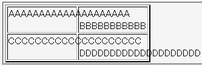

表のセル要素（th, td）や行グループ要素（thead, tfoot, tbody）など一部の要素では、overflowプロパティへの対応が不完全になっている。例えば、scroll値を指定してもスクロールバーが現れない。
<table border="2" style="width:15em; table-layout:fixed;"> <tr> <td style="overflow:visible;">AAAAAAAAAAAAAAAAAAAA</td> <td style="overflow:hidden;"><br>BBBBBBBBBBBBBBBBBBBB</td> </tr> <tr> <td style="overflow:scroll;">CCCCCCCCCCCCCCCCCCCC</td> <td style="overflow:auto;"><br>DDDDDDDDDDDDDDDDDDDD</td> </tr> </table>
| AAAAAAAAAAAAAAAAAAAA | |
| CCCCCCCCCCCCCCCCCCCC | DDDDDDDDDDDDDDDDDDDD |
表のレイアウトに固定レイアウトを使用すると、セル要素の内容物がボックスをはみ出すことがあります。ここでは、そのような場合にoverflowプロパティの値によって振る舞いがどのように変わるかを示しています。
N7.1での表示（標準モード）
セル要素にoverflowプロパティを指定したとき、はみ出した内容物の扱いは概ね以下のようになります。強調されているものはCSS勧告と異なる実装です。
| overflow: | visible | hidden | scroll | auto |
|---|---|---|---|---|
| Netscape7.1 | 正常。 | 正常。 | visibleと同じ。スクロール不能。 | visibleと同じ。スクロール不能。 |
| WinIE6.0 | ボックスを広げる。table要素のボックスをはみ出す部分は表示しない。 | 正常。 | hiddenと同じ。スクロール不能。 | hiddenと同じ。スクロール不能。 |
| Opera7.11 | hiddenと同じ。 | 正常。 | hiddenと同じ。スクロール不能。 | hiddenと同じ。スクロール不能。 |
※auto値の扱いについては、一般的なブロックボックスでの扱いと異なるかどうかで判断しています。
Netscape7.1標準モード、Netscape7.1互換モードで不具合の発生を確認しました。